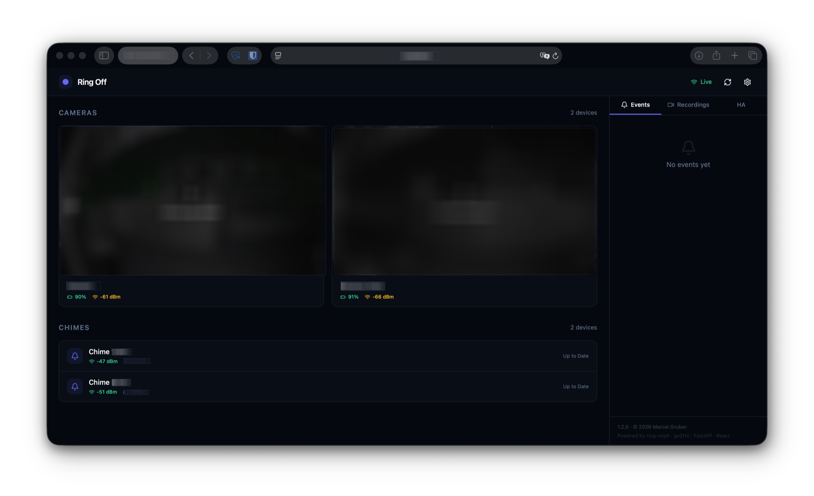

Deine Ring-Klingel.
Ohne Abo.
Your Ring doorbell.
No subscription.
Live-Bild, Aufnahmen bei Bewegung und Klingeln, Push-Nachrichten und Akkustand – selbst gehostet auf deinem Server. Die Clips bleiben bei dir zu Hause.
Live view, recordings on motion and doorbell presses, push notifications and battery status – self-hosted on your own server. Your clips stay at home.
- Kein Ring-AboNo Ring Protect
- Clips lokalLocal clips
- Läuft auf dem Raspberry PiRuns on a Raspberry Pi
- MIT-LizenzMIT licensed

Drei Schritte. Keine Config-Dateien.
Three steps. No config files.
StartenStart
Repository klonen, docker compose up -d – fertig. Alle Dienste laufen in Containern, Zugangsdaten werden selbst erzeugt.
Clone the repo, run docker compose up -d – done. Every service runs in a container and credentials are generated for you.
Bei Ring anmeldenSign in to Ring
Der Einrichtungsassistent im Browser prüft alle Dienste und meldet dich bei Ring an – mit Zwei-Faktor-Code.
The setup wizard in your browser checks every service and signs you in to Ring – including your 2FA code.
ZurücklehnenSit back
Kameras tauchen von selbst auf. Jede Bewegung, jedes Klingeln wird aufgenommen und landet auf Wunsch als Push auf dem Handy.
Cameras show up on their own. Every motion and ring is recorded and, if you like, pushed straight to your phone.
Alles, was die Ring-App kann. Auf deiner Hardware.
Everything you'd expect. On hardware you own.
Gebaut auf bewährten Open-Source-Projekten – ring-mqtt, go2rtc, Mosquitto und ffmpeg – in einer einzigen, aufgeräumten Oberfläche.
Built on proven open-source projects – ring-mqtt, go2rtc, Mosquitto and ffmpeg – in one clean interface.
Jedes Klingeln. Jede Bewegung.Every ring. Every motion.
Bei jedem Ereignis wird ein Clip lokal gespeichert – Dauer und Ereignistyp einstellbar. Personen bekommen ein eigenes Abzeichen, alte Clips löscht eine Aufbewahrungsregel automatisch.
A clip is saved locally on every event, with configurable duration and event types. People get their own badge, and a retention policy cleans up old clips automatically.
Live-Bild im BrowserLive view in the browser
go2rtc wählt automatisch, was Browser und Netz hergeben. Akku-Kameras werden vorher geweckt.
go2rtc picks whatever your browser and network allow. Battery cameras get woken up first.
Benachrichtigungen, wie du sie willstNotifications your way
Über ntfy.sh oder Gotify, für jeden Ereignistyp einzeln schaltbar.
Via ntfy.sh or Gotify, switchable per event type.
Akku und WLAN im BlickBattery and WiFi at a glance
Akkustand und Signal jeder Kamera, WLAN-Signal der Gongs – direkt auf dem Dashboard.
Battery level and signal for every camera, WiFi for chimes – right on the dashboard.
Kameras finden sich selbstCameras find themselves
Neue Geräte aus MQTT werden automatisch zu go2rtc hinzugefügt. Umbenennen oder ausblenden geht jederzeit in den Einstellungen.
New devices found via MQTT are added to go2rtc automatically. Rename or hide them any time in settings.
Durchdacht bis ins DetailThought through
Responsive Oberfläche mit Navigationsleiste am Handy, Home-Assistant-Panel und Docker-Images für x86-64 und arm64.
Responsive layout with a bottom bar on phones, a Home Assistant panel and Docker images for x86-64 and arm64.
Deine Aufnahmen gehören dir. Nur dir.
Your footage belongs to you. Only you.
Clips, Ereignisse und Einstellungen liegen in einem Ordner auf deinem Server – nicht in einer fremden Cloud.
Clips, events and settings live in a folder on your server – not in someone else's cloud.
data/ auf deinem Rechner.Everything in data/ on your machine.In fünf Minuten startklar.
Up and running in five minutes.
Alles, was du brauchst, ist ein Rechner, der durchläuft – Heimserver, NAS mit Docker oder Raspberry Pi.
All you need is a machine that stays on – a home server, a NAS with Docker or a Raspberry Pi.
$ git clone https://github.com/m4rcelnoel/ring-off.git
$ cd ring-off$ docker compose up -dhttp://<server-ip>:8080Später aktualisieren:Update later: git pull && docker compose pull && docker compose up -d
VoraussetzungenRequirements
- Docker24+
- Docker Composev2.20+
- Ring-KontoRing accountkostenlos, ohne Abofree, no subscription
- ArchitekturArchitecturex86-64 · arm64
Getestete GeräteTested devices
- Video Doorbell 3getestettested
- Video Doorbell (2nd Gen)läuftworks
Gut zu wissen.
Good to know.
Fehlerbehebung in der Doku →Troubleshooting in the docs →Frage stellen auf GitHub →Ask on GitHub →
Brauche ich ein Ring-Abo?Do I need a Ring subscription?
Nein. Ein normales, kostenloses Ring-Konto reicht. Aufnahmen, Verlauf und Benachrichtigungen übernimmt Ring Off auf deinem Server.
No. A regular free Ring account is enough. Ring Off handles recordings, history and notifications on your own server.
Spricht meine Kamera dann gar nicht mehr mit Ring?Does my camera stop talking to Ring entirely?
Doch – Ring-Kameras gehen immer über die Ring-Cloud, das lässt sich nicht umgehen. Ring Off holt Bild und Ereignisse über ring-mqtt ab und speichert Clips, Ereignisse und Einstellungen ausschließlich bei dir.
They still do – Ring cameras always connect through the Ring cloud, there's no way around that. Ring Off fetches video and events via ring-mqtt and stores clips, events and settings only on your machine.
Funktioniert meine Kamera?Will my camera work?
Getestet sind die Video Doorbell 3 und die Video Doorbell (2nd Gen). Alles, was ring-mqtt unterstützt – Akku-, Kabel-, Innen- und Außenkameras – sollte ebenfalls laufen.
The Video Doorbell 3 and Video Doorbell (2nd Gen) are tested. Anything ring-mqtt supports – battery, wired, indoor and outdoor cameras – should work too.
Läuft das auf einem Raspberry Pi?Does it run on a Raspberry Pi?
Ja. Die Docker-Images gibt es für x86-64 und arm64, also auch für den Raspberry Pi 4 und 5.
Yes. Docker images are published for x86-64 and arm64, so a Raspberry Pi 4 or 5 works.
Kann ich die Aufnahmen auf mein NAS legen?Can I store recordings on my NAS?
Ja. In docker-compose.override.yml zeigst du den Aufnahmeordner mit zwei Zeilen auf eine NAS-Freigabe.
Yes. Two lines in docker-compose.override.yml point the recordings folder at a NAS share.
Klingel zu Hause, Aufnahmen auch.
Your doorbell is at home. So is your footage.
Ring Off ist kostenlos und Open Source. Issues, Ideen und Pull Requests sind willkommen.
Ring Off is free and open source. Issues, ideas and pull requests are welcome.